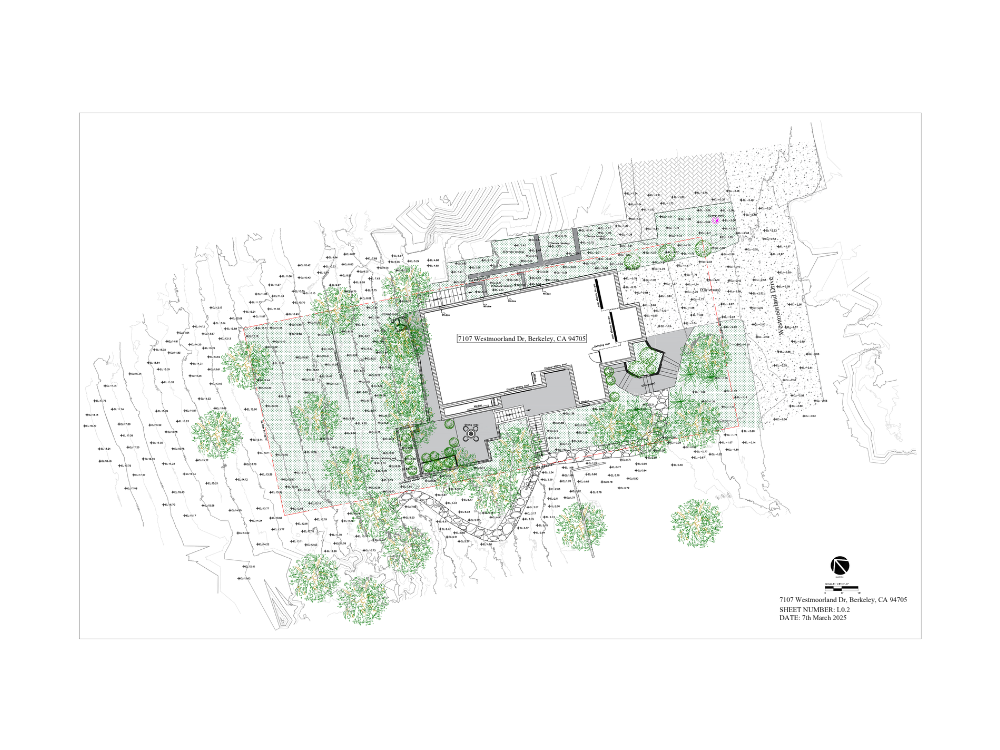

Topographic Surveys
Full feature and level surveys capturing contours, spot elevations, drainage, vegetation and built features — drafted to engineering and planning standards, ready to design on.
Topographic, boundary and cadastral surveys for developers, engineers, architects and landowners — from Nairobi, across all 47 counties.
A survey is not the deliverable — the decision it enables is. A boundary plan that the land registry rejects, or contours that will not import cleanly into your design software, costs far more in delay than the survey ever cost to commission.
GeoHuB delivers survey data engineered for what happens next: drawings that open correctly in AutoCAD and Civil 3D, coordinate tables tied to the right datum, and plans drafted to the conventions your planning authority expects.
We are based in Nairobi and work across Kenya. Field capture is arranged with licensed surveyors and drone operators local to your site; survey planning, processing, drafting and quality control are handled by our team — so you deal with one point of contact from brief to final files.

Full feature and level surveys capturing contours, spot elevations, drainage, vegetation and built features — drafted to engineering and planning standards, ready to design on.
Parcel boundary establishment with coordinate tables, beacon schedules, setback lines and title-block documentation prepared for land registry submission.
UAV capture processed into orthomosaics, digital elevation models and point clouds — efficient for large sites, difficult terrain and volume measurement.
If your question is not here, ask it directly — every enquiry is answered personally, usually the same working day.
Ask your questionYes. We are based in Nairobi and take on work across all 47 counties.
Field measurement is arranged with licensed surveyors and drone operators local to the site, while survey planning, processing, drafting and quality control are handled by our team. You get one point of contact and a consistent standard of deliverable regardless of where the site is.
A topographic survey records the physical shape of the land — contours, levels, drainage, vegetation and existing structures. It is what engineers and architects need in order to design on a site.
A cadastral survey establishes and documents legal parcel boundaries, producing coordinate tables and title-block drawings for land registry purposes.
They answer different questions, and many projects need both. If you are unsure which applies, describe what you are trying to achieve and we will tell you.
Typically CAD drawings in DWG or DXF, a coordinate table in CSV or Excel, and a georeferenced survey plan as PDF. Where drone capture is used you also receive an orthomosaic and a digital elevation model as GeoTIFF.
Tell us what your engineers, architects or planning authority require and we will match it exactly — including layer naming conventions and title block templates if you have them.
Cost depends on the size of the site, terrain and access, the accuracy required, and which deliverables you need. A flat half-acre plot in Nairobi and a 12 km road corridor in difficult terrain are not comparable jobs.
Rather than publish a rate card that would be wrong for most sites, we give you a fixed written quote within 24 hours of receiving your brief — free, with no obligation.
Often, yes — and it is usually the cheapest route. We regularly take raw total station or GNSS observations, old survey plans, scanned deed plans or drone imagery captured by someone else, and turn them into clean, georeferenced, CAD-ready deliverables.
Send us what you have and we will tell you honestly whether it is usable before you commit to anything.
Send the location, the approximate site size and what you need it for. Within 24 hours you will have a fixed written price — free, and with no obligation.
Typically answered the same working day · Nairobi, Kenya (EAT)